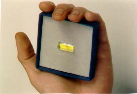

Zurück zur Franz Bardon Forschung
© Paul Allen, März 2000.
Franz Bardon Research (englisch)
Franz Bardon Forschung (deutsch)
Dexheimer's Homepage: http://www.aanara.de/
Kontakt: email: pdexheimer@aol.comDie offizielle homepage zum Formelreaktor von Rainer Wagner.
Inhalt:
- Die BML und der Formelreaktor: Stellungnahme von Angelika Müller, Tochter von Cuno H. Müller, dem Gründer der BML zur Arbeit Dexheimers und dem Formelreaktor.
- Der Formelreaktor
- Eine Zusammenfassung der Methode über die Japa-ähnliche (nichtkabbalistische) Verwendung von Bardons kabbalistischen Formeln nach nach Cuno Müller (BML) - Dexheimer (Energiearbeit).
- Dexheimers eigene Darstellung des Formelreaktors.
- Email-Diskussion über die Japa-ähnliche (nichtkabbalistische) Verwendung von Bardons kabbalistischen Formeln nach Müller/Dexheimer..
Die Bardon-Müller-Liga und der Formelreaktor
Es folgt zunächst die Stellungnahme von Angelika Müller, Tochter von Cuno H. Müller, dem Gründer der BML, zur Arbeit Dexheimers und dem Formelreaktor. Diese Stellungnahme erreichte mich erst im Jahre 2004, also 4 Jahre nach der Erstformulierung dieses Artikels. Ich finde, dass jeder das Recht hat, eine Stellungnahme zu einem bestimmten Sachverhalt abzugeben. Ich (Paul Allen) möchte allerdings darauf hinweisen, dass ich bei diesen unterschiedlichen Meinungen für keine der beiden Personen Partei ergreifen möchte, seit der Veröffentlichung dieses Artikels im Jahr 2000 keinen Kontakt zu Peter Dexheimer oder "seinem Kreis" hatte und auch in keinem direkten besonderen Kontakt zu Frau Müller und "ihrem Kreis" :-) stehe.
Obwohl ich eine eher kritische Einstellung zu Dexheimers Werk habe, sollte man schon darauf hinweisen, dass es jedem frei steht, Sekundärliteratur auf einem bestimmten Gebiet zu veröffentlichen, solange man sich an die Spielregeln hält und keine Copyright-Rechte verletzt. Auch Cuno H. Müller hat ja die Formeln Bardons benützt, sein Werk stellt also selbst auch Sekundärliteratur dar. Die besondere Methode von Herrn Müller zur Anwendung von Bardons Formeln als geistiges Eigentum zu betrachten, scheint mir eine eher umstrittene Aussage zu sein. Sobald eine Methode veröffentlicht wird, geht sie in den allgemeinen pool des gesamten Wissens der Menschheit ein. Will man das verhindern muss man die Methode geheim halten. Inwieweit Methoden durch das Copyright schützbar sind, ist ein zur Zeit heftig umstrittener Gegenstand weltweiter Debatten, zum Beispiel auf dem Gebiet der Computer-Software (Amerika: pro, Europa bisher: dagegen, tendiert aufgrund heftigen Lobbyings großer Konzerne allmählich in Richtung amerikanischer Verhältnisse). Voraussetzung für einen solchen Schutz wäre allerdings eine Anmeldung zum Patent gewesen, was meines Wissens nicht erfolgt ist.
Sollte es wirklich nachteilige Folgen der Methode nach Cuno H. Müller geben, wie Angelika Müller in der folgenden Stellungnahme anzudeuten scheint, dann wäre es allerdings angebracht, klar und deutlich auf die Art dieser Folgen einzugehen und Anwender auf mögliche Gefahren hinzuweisen.
Wofür ich allerdings sehr viel Verständnis habe, ist die Empörung von Frau Müller, dass die Methode der BML einfach kopiert wird, ohne Erlaubnis und Einverständnis des Erfinders. Ich kann Frau Müller nur damit "trösten", dass es eben auf jedem Gebiet so ist: wird irgend etwas von einem Menschen aufgebaut das viele andere Menschen interessiert, dann wird es über kurz oder lang Nachahmer geben ...
(Siehe auch: Gegendarstellung zu Bemerkungen Rüggebergs über die BML.)
---------
ANMERKUNG zu Peter Dexheimer:
Peter Dexheimer veröffentlichte in seinen Büchern über Energiearbeit und Formelreferenz Artikel (und die Idee des Formelreaktors) aus den Liga-Zeitschriften der Bardon-Müller-Liga, ohne Genehmigung.
Er kannte Cuno-Hellmut Müller weder persönlich noch arbeitete er je mit ihm zusammen.
Durch das Internet erfuhr ich von diesen Veröffentlichungen und untersagte Herrn Dexheimer daraufhin, das geistige Eigentum meines Vaters weiter zu verbreiten.
Wie er mir daraufhin mitteilte, wurde ihm schon lange vor meinem Schreiben von seinem Anwalt bestätigt, dass die Veröffentlichungen völlig korrekt sind, denn, so wörtlich „gab und gibt es leider Menschen, die nicht wollen, dass Informationen Ihres Vaters dem breiten Publikum zugänglich gemacht werden“. Diese Menschen wollten ihm Urheberrechtsverstösse nachweisen, was, so wörtlich „natürlich fehlschlug, da ja keine Verstösse vorliegen“.
Aber was ist mit dem moralischen Aspekt? Ich habe Herrn Dexheimer mitgeteilt, dass ich wegen der Erfahrung mit der BML und den daraus resultierenden Folgen für meinen Vater, und auch andere Personen, keiner weiteren Veröffentlichung zustimmen kann und diese Entscheidung sollte respektiert werden.
Zur Rechtfertigung einer Veröffentlichung wurden auch Gerüchte in die Welt gesetzt, die besagten, dass mein Vater sich in einer Nervenheilanstalt befinde, oder einem Orden beigetreten sei, wohl um zu erklären, warum er nicht persönlich anzutreffen ist.
Ich kann versichern, dass mein Vater weder in einer Nervenheilanstalt, noch in einem Orden war und es ist immer wieder erschreckend festzustellen, zu was Menschen aus reiner Profitgier fähig sind.
In diesem Zusammenhang möchte ich auch erwähnen, dass die Texte in den Büchern Energiearbeit ausschliesslich von Peter Dexheimer stammen und er diese mit den Artikeln aus den Zeitschriften der BML und aus "Die andere Welt" des Hermann-Bauer-Verlages, nach seiner eigenen Methode kombiniert hat.
Angelika Müller. (Juli 2004)
Der Formelreaktor
Von Rainer Wagner und Peter Dexheimer wurde vor einiger Zeit ein sogenannter Formelreaktor vorgestellt, der in Verbindung mit Dexheimer's Energiearbeit angewendet wird. In "Energiearbeit" beschreibt Dexheimer die Anwendung von Bardon's kabbalistischen Formeln auf eine spezielle Weise und zwar in der Tradition der ehemaligen Bardon/Müller Liga (BML). (Sieh auch: Rüggebergs Kommentar zur BML)
Dabei werden Bardon's Formeln in einer Art von Lautmagie intoniert ("geformelt"), oder in verschiedene Objekte wie z.B. Lebensmittel "hineingeformelt". Dadurch sollen bestimmte Wirkungen, die Bardon in seinem 3. Buch ("Quabbalah") beschreibt, erreichbar sein.
Mehr über Dexheimers "Energiearbeit" kann man auf AAO's homepage finden: Dexheimer1 und Dexheimer2 .
Diese Wirkungen sollen nun durch den Formelreaktor vielfach verstärkt werden. Der Formelreaktor besteht aus einem quaderförmigen Bergkristall (Quarz), Höhe = 1 cm, Grundfläche 0,4x0,4 cm, der magisch imprägniert wurde.

Bild des Formelreaktores.
Der Quarzkristall ist farblos, hier zur besseren Ansicht aber gelb unterlegt.
Das Photo stammt von Dexheimer.
In diesen Formelreaktor werden die gewählten Buchstaben(-kombinationen) hineingeformelt, und sollen durch den Formelreaktor vielfach verstärkt zurückgestrahlt werden, sodaß beim Formeln eine starke "Zeitersparnis" eintritt.
Der Formelreaktor soll auf die Anwendung der von Dexheimer beschriebenen "Grundformeln" beschränkt werden, um eventuellen Mißbrauch bzw. gesundheitliche Schäden zu verhindern.
Nach der Beschreibung von Wagner/Dexheimer, stehen die einzelnen Formelreaktoren trotz ev. weiter räumlicher Trennung in Verbindung, was ihre Wirkung noch weiter verstärkt.
Meine persönliche Meinung zu Dexheimer's - Müllers Methode habe ich bereits 1997 (Dexheimer's Energywork) dargestellt.
Hier noch mal eine Zusammenfassung der Methode über die Japa-ähnliche (nichtkabbalistische) Verwendung von Bardons kabbalistischen Formeln nach Cuno Müller (BML) - Dexheimer (Energiearbeit).
aus dem damaligen deutschen Franz Bardon-Forum (Beitrag1080): im März 2000.
--------------------------------------------------------------------------------
[ Franz Bardon Forum ]
--------------------------------------------------------------------------------
Dexheimer/Müller usw.
Geschrieben von Paul Allen am 14. März 2000 14:38:43:
Als Antwort auf: An Paul Allen geschrieben von Torsten am 14. März 2000 12:54:34
Hallo Torsten,
vielen Dank für deine Frage.
Was jetzt kommt ist allerdings nur meine PERSÖNLICHE Meinung; eine von vielen, jeder kann seine Erfahrungen selbst machen. Ich finde Dexheimers/Müllers Methode nicht gefährlich, im Unterschied zu Stejnar und Rüggeberg.
Allerdings bin ich der Meinung, daß die Methode nach Müller/Dexheimer mit Bardon's Kabbala nichts zu tun hat. (Dexheimer, mit dem ich in freundlicher Verbindung stehe, kennt meine Meinung zum Thema, was unserem guten Einvernehmen aber keinen Abbruch tut.)
Meiner Meinung nach handelt es sich bei diesem System um Japa-Yoga, bei dem man eine gewisse Idee in Wortform so lange wiederholt, bis sie sich realisiert. In welche Wortsymbolik man die Idee verlegt, ist dabei allerdings nicht so wichtig. Ausnahme: kulturelle Prägungen: wenn man ein Wort, Buchstabenverbindung oder ähnliches verwendet, das in der eigenen Kultur traditionell eine besondere Bedeutung hat, z.B.: Engels, Gottesnamen, Mantras usw., dann kann man die Wirkung schneller realisieren.
Wenn jemand GLAUBT, daß er mit den Buchstabenkombinationen, die Bardon angibt, gute Erfolge erreichen kann, weil die Buchstabenkombinationen von BARDON stammen, dann wird er sich natürlich beim Realisieren leichter tun. [Zusatz: Das Ganze hat aber NICHTS mit der kabbalistischen Verwendung der Formeln nach Bardon zu tun.] Er könnte aber genausogut jede andere Buchstabenkombination verwenden, irgendein selbst zusammengestelltes Wort, irgend einen z.B. Engelsnamen, der ihm sympathisch ist, oder an den er besonders glauben kann, usw. Wenn das gewählte Wort bzw Buchstabenkombination vom eigenen Guru/Meister kommt, dann kann das den eigenen Glauben und damit die Wirksamkeit enorm steigern.
Die indische (aber ganz allgemein esoterisch-okkulte) Literatur ist voll von Anektoten in dieser Hinsicht: z.B. ein Schwindlerguru übergibt einem tiefgläubigen und sehr fleißigen Schüler irgend ein nonsens-mantra (oder auch ein traditionelles wie om.mani.padme.hum) und der Schüler erreicht durch hingebungsvolles Üben (Wiederholen) dieses Mantras Gottesverbindung, was den pseudo-Guru-Meister natürlich sehr ärgert :-) .
Daß durch Japa Yoga außerordentliche, ja bis ans Wunder grenzende Wirkungen und Phänomene realisiert werden können, ist allgemein bekannt. In Indien gibt es Schulen, die nur nach diesem System arbeiten. Ich kenne einen indischen Meister, der nur durch Anwendung von Japa Yoga sehr hohe Bewußtseinszustände erreichen konnte. Heilungen, Verbindung mit verschiedenen Gottheiten und inneren Zuständem usw. usw. : alles hängt vom Fleiß des Übenden ab.
Japa Yoga ist allerdings eine sehr aufwendige Methode, man muß viel Zeit investieren um bestimmte Wirkungen zu erreichen. Es gibt andere Methoden, die schneller wirken, das soll aber nicht bedeuten, daß Japa Yoga weniger wert ist.
Zu glauben, daß die Kabbala, die Bardon in seinem 3. Werk beschreibt, nur einfach Japa-Yoga sei, ist ein grober Irrtum. Und zu glauben, daß man eine Formel Bardon's nur in der 4 Sinnenkonzentration aussprechen müsse, sodaß sie die Wirkungen hat, die Bardon beschreibt, ist genauso ein Irrtum. Bardon's Formeln hängen in ihrer Wirkungsart und Intensität von den erreichten Einsichten, Zuständen, kurz von der erreichten Reife beim Üben des 1er Schlüssels des 3. Buchs ab.
Deshalb ist es meiner Meinung nach auch ziemlich sinnlos, vor der 8. Stufe des WWA (= Der Weg zum wahren Adepten, Bardon's magischer Grundkurs), mit der Kabbalah zu beginnen. Die ausreichende Sinnenkonzentrations-Fähigkeit beherrscht man ja schon in der 3. Stufe [des "Weg zum wahren Adepten"]. Meine Empfehlung zu Dexheimers/Müllers Methode: wenn sie dir sympathisch ist, dann verwende sie ! Man kann mit sehr vielen verschiedenen Methoden ans Ziel kommen. Für Fortgeschrittene sind Bardon's Methoden wahrscheinlich zielführender.
Freundliche Grüße,
Paul Allen.
Ich möchte hier noch darauf hinweisen, daß Emil Stejnar von dieser Methode abrät, da er gesundheitliche und andere Schäden befürchtet. Dieser Meinung schließt sich auch Dieter Rüggeberg an.
Jeder sollte sich allerdings seine eigene Meinung bilden und muß seine eigenen Erfahrungen sammeln.
Hier folgt noch Dexheimer's Beschreibung des Formelreaktors:
...
Doch ist der jetzige Zeitpunkt um so interessanter. Letzten Oktober [1999; Anm. von PA] wurde im Aa Na Ra - Institut ein neues Produkt auf den Markt gebracht, das bis heute meine Erwartungen immer wieder übersteigt.Es ist der "Formelreaktor" von Rainer Wagner. Er besteht aus einem Kristall, dessen Programmierung jedem Formelnden in außergewöhnlicher Weise hilft, seine Ziele bzw. seine Entwicklung voranzutreiben.
Der Formelreaktor verstärkt nicht nur die Energie der einzelnen Formeln in so starker Weise, daß der Übende nur noch wenige Male seine Formeln wiederholen muß, sondern transformiert jede Formel gleichzeitig in eine Drei- Sinnes-Konzentrations-Formel, was diese natürlich noch einmal verstärkt. Ein Nebeneffekt ist dadurch natürlich, daß der Übende in sich die Drei-Sinnes-Konzentration aufbaut und mit der Zeit automatisch anwendet. Es ist z.B. rasch erkennbar, das beim Üben eines Buchstabens automatisch der richtige Klang bzw. die Tonlage angenommen wird etc.
Gleichzeitig ist der Formelreaktor als Netzwerk gedacht, so daß alle Formenden miteinander verbunden sind. Das heißt, die Grundformeln JHW, DC, DS, DSS, DSSS, CK, EF, EK, SAL und OO sind miteinander vernetzt. Formelt ein Übender DC so werden alle Formelreaktoren aktiviert und ihre Besitzer erhalten die Energie. Dieses Netzwerk ist ausschließlich auf die Grundformeln begrenzt, damit kein Mißbrauch betrieben wird. Genauso ist hierfür Eigenverantwortung nötig, so daß sich niemand darauf verläßt, daß ein anderer für ihn die "Arbeit" tut.
Außerdem entsteht zwischen allen Formelreaktoren ein Feld, in dem alle sich befindenden Wesen die Energie spüren können und so durch die Grundformeln von unangenehmen Energien befreit werden. Dieses Feld besitzt jedoch nicht die gleiche Energie, welche jeder Übende von seinem Formelreaktor erhält. Dies ist auch nicht angebracht, da manche solch eine starke Kraft noch nicht ertragen könnten. Doch reinigt und schützt es sie sukzessive immer mehr.
Soweit die Beschreibung Peter Dexheimer's. (Kontakt: email: pdexheimer@aol.com. ; seine Homepage: http://www.dexheimer-peter.com/)
Email Diskussion über die Japa-ähnliche (nichtkabbalistische) Verwendung von Bardons kabbalistischen Formeln nach Müller/Dexheimer.
22. Mai 2000
Von G.Hallo!
Ich würde gerne wissen, was Du bzw. Leute, die Du kennst, mit der "Magie", wie sie Peter Dexheimer in seinem Buch "Energiearbeit" vorstellt, für Erfahrungen gemacht haben. Funktioniert die Sache wirklich? In einem der Boards auf dieser Seite meinst Du, daß sie dann funktioniert, wenn man daran glaubt - mehr ist also Deiner Ansicht nach nicht dahinter? Wie sind denn so die Erfahrungen mit diesem "Formelreaktor"?
Gruß G.
====================
25. Mai 2000
Von: Paul AllenLieber G.,
vielen Dank für dein email.
>In einem der Boards auf dieser Seite meinst Du, daß sie dann funktioniert, wenn man daran glaubt - mehr ist also Deiner Ansicht nach nicht dahinter?
Nein, hier hast du mich gründlich missverstanden. Ich weiss nicht, welchen Text du von mir gelesen hast. Bitte lies in diesem Zusammenhang noch einmal genau den Text über meinen Kommentar zum Formelakkumulator auf der FB Forschung website und im Forum nach. Ich habe dort geschrieben, dass die Methode umso besser wirkt, je mehr man daran glaubt. Das ist aber ein allgemeines Prinzip in der "Magie". Und es ist hier nicht der Begriff "Glaube" der Durchschnittswelt gemeint, so in der Art: wer an dieses Medikament glaubt, dem wird es helfen ... (man könnte aber auch ein anderes verwenden und es würde genausogut helfen, was wirkt ist nicht das Medikament, sondern der Glaube.) Nein hier ist der "manifestierte Glaube" gemeint, der Glaube, der durch Verwirklichung entsteht. Je reifer (= je mehr Fähigkeiten er beherrscht, je mehr Erfahrungen er gemacht hat) ein Mensch wird, je tiefer er in die "Geheimnisse" eindring, umso mehr Erfahrungen sammelt er auf dem magischen Weg, und umso mehr wird er seinen Glauben an die wirksamen Prinzipien in dieser Hinsicht fördern. Wer 100 Mal erlebt hat dass etwas funktioniert, der wird beim 101 Mal fest daran glauben.
Bei Dexheimers Methode handelt es sich um Japa Yoga. Japa Yoga ist eine sehr wirksame, wenn auch ziemlich aufwendige Methode. Hier ein Link, wo du mehr über Japa Yoga nachlesen kannst.
http://www.yoga-vidya.de/JAPAYoga.htm
(Falls dieser link nicht mehr funktioniert gibts eine Kopie auf:http://www.geocities.com/Athens/Forum/6243/JapaYoga.html)
Ich zitiere aus diesem Dokument, wo über eine Unterart von Japa-Yoga folgendes gesagt wird:
===Beginn Zitat====
Gayatri-PurascharanaDas Brahma-Gayatri-Mantra hat 24 Silben. Daher besteht ein Gayatri-Purascharana aus der 2.400.000fachen Wiederholung des Gayatri-Mantras. Es gibt verschiedene Regeln für Purascharana. Wenn man das Mantra 3.000 Mal täglich wiederholt, sollte man diese Anzahl jeden Tag beibehalten, bis man die vollen 2.400.000 beendet hat. Reinige den Spiegel des Geistes und bereite den Boden für die Aussaat des spirituellen Samens!
===Ende Zitat=====Du kannst dir vorstellen, wie lange es dauert, ein Mantra (oder andere Buchstabenfolge) 3000 Mal täglich bzw. 2 Millionen 400 Tausend Mal insgesamt zu wiederholen !?!
Entsprechend wirksam ist die Methode, da dadurch das ganze Wesen des Magiers bzw. Yogis stark beeinflusst wird.Ich hoffe, mit diesen kurzen Hinweisen deine Frage beantwortet zu haben. Ansonsten stehen ich gerne für weitere Fragen zur Verfügung.
Freundliche Grüsse,
Paul Allen.============================
25. Mai 2000
Von G.Hallo Paul,
>Nein, hier hast du mich gründlich missverstanden. Ich weiss nicht, welchen Text du von mir gelesen hast. Bitte lies in diesem Zusammenhang noch einmal genau den Text über meinen Kommentar zum Formelakkumulator auf der FB Forschung website und im Forum nach. Ich habe dort geschrieben, dass die Methode umso besser wirkt, je mehr man daran glaubt.
Mhmm, du schreibst aber auch, daß man im Prinzip JEDE Buchstabenkombination nehmen könnte, es kommt darauf an, ob man von der Wirkung überzeugt ist. Weiters schreibst du von einem "Schwindlerguru", der einem Schüler ein sinnloses Mantra gibt, mit dem dieser dann tatsächlich Erleuchtungszustände erlangt...
>Bei Dexheimers Methode handelt es sich um Japa Yoga. Japa Yoga ist eine sehr wirksame, wenn auch ziemlich aufwendige Methode.
>Du kannst dir vorstellen, wie lange es dauert, ein Mantra (oder andere >Buchstabenfolge) 3000 Mal täglich bzw. 2 Millionen 400 Tausend Mal insgesamt zu wiederholen !?! Entsprechend wirksam ist die Methode, da dadurch das ganze Wesen des Magiers bzw. Yogis stark beeinflusst wird.
Na ja gut, o.k., dann ist das Ganze aber uninteressant für mich. Magie hat für mich auch etwas mit Effizienz zu tun, und wenn ich jeden Tag stundenlang irgendein Mantra wiederholen muß, und das für mehrere Monate, dann ist das nicht das, was ich mir unter Effizienz vorstelle. Ich denke, ich probier's 'mal mit 15 Min. am Tag, 'mal schauen, was dabei 'rauskommt...
Freundliche Grüße
G.===============================
27. Mai 2000
Von: Paul Allen>Mhmm, du schreibst aber auch, daß man im Prinzip JEDE Buchstabenkombination nehmen könnte, es kommt darauf an, ob man von der Wirkung überzeugt ist. Weiters schreibst du von einem "Schwindlerguru", der einem Schüler ein sinnloses Mantra gibt, mit dem dieser dann tatsächlich Erleuchtungszustände erlangt...
Ja, denn das Wirkungsprinzip ist die Konzentration des Menschen auf das gewählte Konzept. Jemand der sich für lange Zeiten auf das Gottesprinzip konzentriert, erlangt Gottesverwirklichung, ganz unabhängig davon, WIE er diese Konzentration in seinem Geist kodiert, ob es ein Bild, eine Buchstabenfolge, oder sonstwas ist. Der "Schwindelguru" gibt dem gläubigen Menschen irgendein Mantra, Buchstabenfolge, Bild oder ähnliches, und der Schüler erreicht Gottverwirklichung durch sein fleissiges Üben. Man kann also wirklich alles nehmen. ABER, wenn man einen Begriff verwendet, der traditionell schon Gott zum Ausdruck bringt, mit dem man z.B. aufgewachsen ist, dann hat das von Anfang an eine viel stärkere Wirkung im eigenen Geist, da der Begriff schon tief verwurzelt ist.
>Na ja gut, o.k., dann ist das Ganze aber uninteressant für mich. Magie hat für mich auch etwas mit Effizienz zu tun, und wenn ich jeden Tag stundenlang irgendein Mantra wiederholen muß, und das für mehrere Monate, dann ist das nicht das, was ich mir unter Effizienz vorstelle. Ich denke, ich probier's 'mal mit 15 Min. am Tag, 'mal schauen, was dabei 'rauskommt...
Ja, gute Idee, auch dann wirkts, nur nicht so durchdringend (ausser du wärst dafür besonders talentiert; kann durchaus vorkommen).
Die Leute die sich nur auf Japa Yoga konzentrieren, verfolgen damit das Ziel Gott-Verwirklichung zu erreichen; das ist natürlich ein hohes Ziel und dementsprechend ist auch der Aufwand. Es ist aber sicher, dass auch mit dieser einfachen Methode Gottesverwirklichung erreicht werden kann, ich habe selbst einen Yogi kennengelernt, der es nur durch Japa geschafft hat.
Meiner Meinung nach ist's sowieso besser, wenn man die gleiche Zeit für Bardon's Stufenlehrgang investiert, da man damit seine Persönlichkeit viel umfassender, weitreichender weiterentwickelt. (Natürlich habe ich diese Auffassung, ich bin ja schliesslich Bardon Anhänger; jemand anderer würde ev. eine andere Auffassung vertreten). Welches System man für seine Selbstverwirklichung verwendet, hängt von den persönlichen Vorlieben des Einzelnen ab !
Man sollte nur nicht Äpfel mit Birnen verwechseln: Theurgie (= Bardons Kabbalah) und Japa-Yoga sind zwei sehr unterschiedliche Systeme.
Eines möchte ich noch anmerken: man kann Japa sehr gut bei bestimmten Tätigkeiten einsetzen, die wenig geistige Aufmerksamkeit erfordern. Wenn man z.B. den Hausputz macht usw. Ich persönlich setze Japa schon seit langem ein (ich habe die Methode vor 20 Jahren in Indien kennen gelernt und bin seit damals sehr zufrieden mit ihr) und zwar genau bei solchen Tätigkeiten: das Japa läuft automatisch runter; die Zeit wird dadurch gut verwendet. Allerdings verwende ich dazu nicht Bardon's Formeln, sondern entweder traditionelle Gottesnamen, Mantras etc., oder eine Formel, die ich mir selbst nach den jeweiligen Erfordernissen zusammenstelle.
Vielleicht hast du ja Lust, deine Erfahrungen mit Dexheimers Methode irgendwann im Forum zu diskutieren.
Viel Erfolg inzwischen,
Paul Allen.
Zurück
zur Franz Bardon Forschung

This
page hosted by  Get your own Free Home Page
Get your own Free Home Page